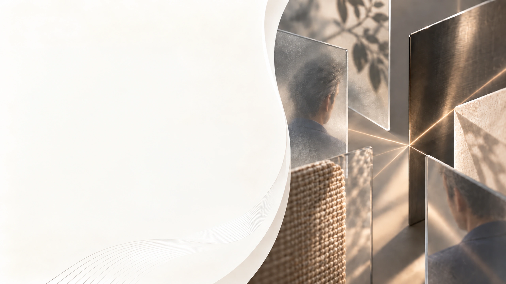
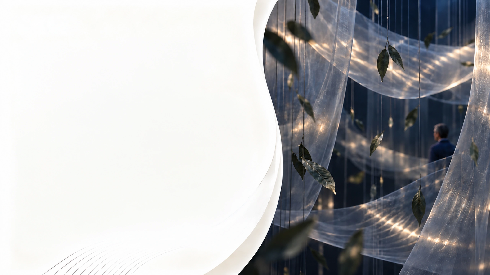
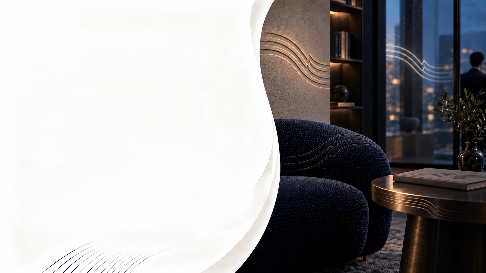

ACCIDENTAL EXPERIENCE
- Mixed signals
- Weak atmosphere
- Inconsistent memory

Your brand is already being sensed.
The real question is whether that experience is intentional.
People experience brands through space, visuals, sound, touch, taste, and scent—often before they process a message.

Every touchpoint is sending a signal.
Lighting, materials, service tone, product presentation, ambient scent, sound, and digital design all shape how people perceive your brand—often instantly.
A brand experience happens with or without a plan.
If sensory cues are fragmented, the experience feels inconsistent. When they are aligned, the brand feels clearer, more trustworthy, and more memorable.
People feel a place before they evaluate it.
Space, light, material, and service rhythm create the emotional frame for everything that follows.
Thoughtful details make people feel at ease.
Warm, intuitive moments create a sense of belonging.
Consistency and care build confidence over time.
Texture and physical interaction
make value tangible.
From packaging to furniture to product handling, tactile details shape comfort, craftsmanship, and perceived premium quality.
Surface feel that invites connection.
Substance that signals quality.
Warmth or coolness that creates comfort.
Refinement in every visible and hidden detail.

Invisible cues quietly guide emotion and behavior.
Scent influences atmosphere and memory. Sound influences tempo and emotional tone. Together they help an experience feel calm, vibrant, premium, or reassuring.
Shapes atmosphere, sparks memory, and creates comfort.
Sets tempo, shifts emotion, and enhances how we feel.
Promotes ease, focus, and emotional balance.
Inspires movement, engagement, and positive momentum.
Elevates perception and reinforces quality and value.
Creates safety, trust, and a sense of belonging.

Recognition grows when the same
feeling appears across touchpoints.
When store, product, packaging, service, and digital experience reinforce the same sensory story, brands become easier to recall and easier to choose.